Mod tools changelog
中文 | English
The entries describe the tools and workflows at the time of each release. To start a new project, see project setup.
The older release channels were Mega and 123 Cloud Drive.
The legacy in-place update instructions replaced MiddleLibLayer. For a current SDK upgrade, follow the project migration instructions on its release page.
2025.9.13
Switch to the new water system
Sync the code with the latest game version
Wave effects in this release required a separate water package.

2025.1.8
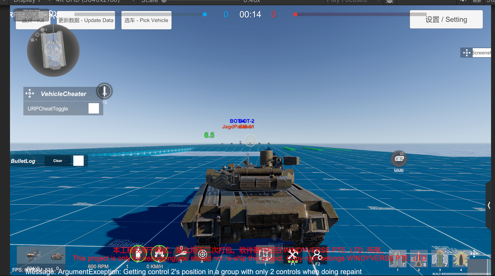
Test range update
Editor interface and performance optimization
The editor language now follows the system by default, and most screens no longer show both languages
Code synced with the latest Steam version
Note for this release: remember to update the com.waveharmonic.crest folder, the water plugin has been updated
2024.12.8
- Improved one-click DIY export: you can now export in batches, and after modifying the source vehicle, clicking export again updates the DIY damage model and other configs to the latest vehicle data.

- Added a one-click display of all DIY parts, used to check whether any part has a wrong slot configuration

- Editor performance optimization
- Vehicle data comparison tool


2024.12.2
- Added the Ctrl + G shortcut to open the editor tools

- Added target vehicles to the test range (the LuaProject path must be configured for game resources to load correctly)
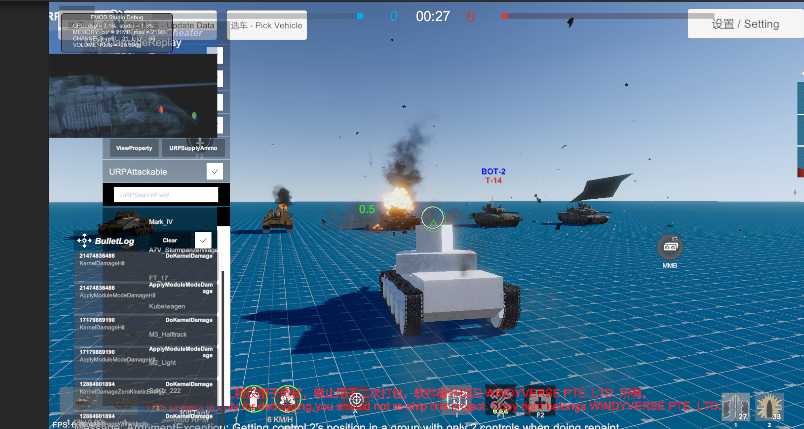
- The mask texture merging tool has been merged into the tool list
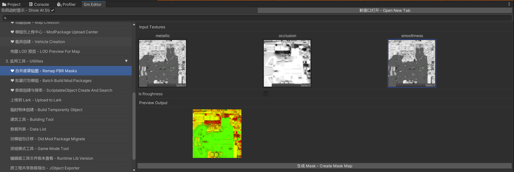
2024.10.29
- Synced the game code to the latest version, with support for the TV shell checkbox
- You need to copy com.waveharmonic.crest into your project folder and overwrite the UnityProject/Packages and UnityURPProject/Packages folders
2024.8.27
- Fixed the wrong shell spawn point
- Fixed Android and iOS builds failing
2024.8.10
- Added a path option to LOD.
- Fixed the penetration calculation in HP bar mode
2024.8.9
- Synced the new post-processing logic
- Added parameters for some of the new post-processing effects
- If you enable the new LOD, you can opt individual vehicles out of it
2024.7.15
- Fixed overpressure being able to damage friendly units
- Fixed abnormal ricochet behaviour in the shot trap area
- Improved the limits on TNT equivalent and explosion radius in the workshop
- Besides crew members, other parts can now be affected by overpressure (the Mod author has to enable it)
2024.7.14
- Added support for editing the reverse track curve
- Added several configuration options for bot aiming points
- Added the shell debugging tool under Framework → GM → Shell Debugging.

2024.5.15
- Added a config for whether the fuel tank catches fire
- Added an option for whether the observation sight can control the main gun
2024.5.2
- Add capture zone config
2024.4.30
- Preset Vehicle Queue
- Zoom Ratio
2024.4.22
We turned off r/w on the vehicle LOD files, halving their memory cost. All vehicles must be repacked so that the LOD file information is updated
The SRP-Vehicle-Camouflage shader, which is only used for previewing inside the editor, is no longer included in the build, which reduces memory usage
2024.4.20
- One-click Bank import.
2024.4.12
- Improved the ammunition boundary tool
2024.4.11
- Added switching between HP and module damage
2024.4.6
- Improved the flow for running a vehicle from the editor (the test drive function on VehicleData)
- Improved the one-click build and publish flow in the editor (Batch Mod Build Manager)
2024.4.4
- Added finer collision for vehicles
- Mod upload now supports a local http proxy
- A module can now be set to either a loader or an autoloader
2024.3.21
- Added a Mod upload tool
- The engine version used at runtime changed to 2022.3.21f1
The Unity Hub installation URI for that release was unityhub://2022.3.21f1/bf09ca542b87.
2024.1.12
- Fixed some Mod tools not showing up when the iOS module is not installed
2024.1.11
- Added auto save
2023.12.30
- Third expansion data

- Range Finder feature
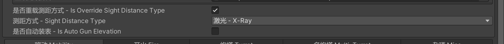
- Improved the quick vehicle thumbnail generation
2023.12.25
- Quick vehicle thumbnail generation
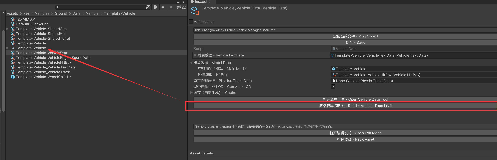
- Custom vehicle material feature
2023.12.23
- Improved the custom material editor
2023.12.21
- Added the custom material feature
2023.12.16
- Added pdb debug logs, which make it easier for developers to locate editor errors
- Added a batch of BulletVFX definitions built into the project
- Improved the dropdown selection on some screens
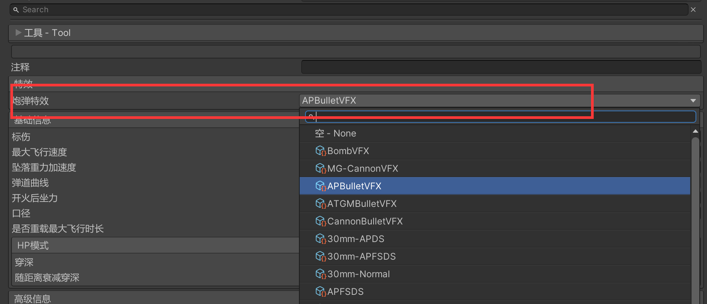

2023.7.23
- Fixed the sloped penetration formula
2023.7.18
- Added a warhead material with fixed penetration, ExplosionWarheadMaterial
- Refined the warhead information for the different shell types
2023.7.8
- Added a sloped penetration parameter to warhead materials - Penetration Vs Angle Coff
- The binding between modules and multi-turret setups now uses part GUIDs. VehicleTextData automatically generates a series of GUIDs from the multi-turret data; fill the matching GUID into a module and the debuff of that internal module is linked to the corresponding turret automatically
- The multiple eras in VehicleInfo are now an array; just click the VehicleInfo data once and the old data is migrated into the new array VehicleInfo
2023.6.24
- Added the aircraft Fmod project
2023.4.19 (1.0.10)
- Fixed the position offset of nodes such as FFPoint when the turret is scaled
- Fixed Lua breakpoints failing to recognise the file name; select the lua scripts already imported into Unity, then right-click Reimport
2023.4.17 (1.0.8)
- Fixed Lua Property fields being parsed incorrectly in some cases
- Fixed OnStarted not being called on Common type Lua scripts
- Added a Common type Lua script, FollowCameraTutorial, which cycles through the vehicles in the match; press F1 during battle to activate it
2023.4.16 (1.0.7)
- Fixed an editor layout error
- Added a validation tool that checks the project for broken assets
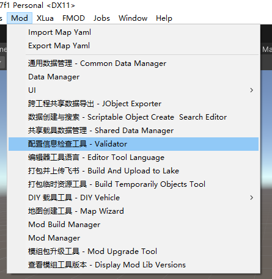
Currently supported: missing vehicle LOD, missing VehicleHitBox
- Fixed several problems with Vehicle Data Editor after reopening the editor
2023.4.15 (1.0.5)
- Fixed the error when packing a secondary gun placed under Turret; this bug only exists in editor tools from Tuesday onwards
2023.4.14 (1.0.4)
- Added an option that only allows an aircraft to fire once it is aimed at the target
2023.4.12
- Added the fmod sound debugging tool
- Added an option for aircraft turrets to use a parent object by default to correct the axis
2023.4.9
- Added FPS weapon support to the test range
- Added obstacles to the test range
- Added the Lua Profiler for monitoring the performance of the lua scripts you write. Watch out for scripts that cost more than 0.1 ms and are called every frame
2023.4.6
- Packing a paid Mod now enforces a check that the mod package id has been filled in
- Fixed garbled text on the shell page
- Fixed errors in the generated ui lua binding code
2023.4.5
- Synced API updates
2023.3.27
- Fixed the sync Property button not showing on some lua panels
- Sight images and text now support attaching lua scripts
2023.3.26
- Added a one-click data update button to the in-editor test range
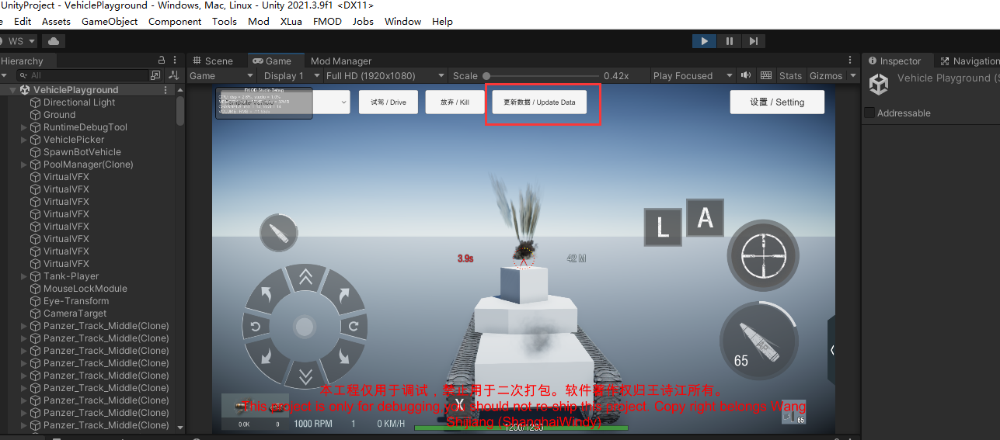
- Added an option in the Project Setting window for whether to read the editor's local assets first Project Setting

- Added Lua Behavior configuration to DIY DIY
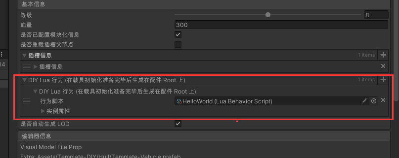
- DIY data and Text Data can now both be read directly from the editor, so new data takes effect without repacking DIY
- The PropValue class now supports listening to events from Lua PropValue
self.OnTotalDamageChanged = function(oldVal, newVal)
print(tostring(oldVal) .. " -> " .. tostring(newVal))
end
self.vehicle.basePlayerState.totalDamage:OnValueChanged("+", self.OnTotalDamageChanged)
- Added the LuaCommonInstanceData class for common scripts (such as the gui of multi-turret vehicles)
2023.3.23
- Vehicle scripts written in Lua can load the version modified inside the editor first, without repacking the vehicle Lua

- Lua scripts can be attached directly to the vehicle config data, which keeps them easier to manage

- Packing a vehicle now enforces a check for an object named MainBody, to avoid runtime errors
- Added PlayerState documentation to the API docs API
2023.3.21
- Added the debug scene for Lua modes,** ModePlayground.unity**
Path Packages/com.shanghaiwindy.middlelayer/Tools/RuntimeDebugger/ModePlayground.unity

- The in-editor vehicle debugging tool has been renamed to VehiclePlayground.unity
Path Packages/com.shanghaiwindy.middlelayer/Tools/RuntimeDebugger/VehiclePlayground.unity
- Added TeamAPI, which makes it easier to get the friendly and enemy teams
2023.3.20
- Major changes on the Lua side, with brand new tutorial documents Lua
2023.3.15
- The FmodPlayComponent component is now public, see the usage document: FmodPlayComponent
- Added interfaces, see the reference document. In xlua you have to prefix CS. before the class name to access these methods, for example CS.ShanghaiWindy.Core.API.VehicleAPI
2023.3.14
- Added an Update Extra Info button to DIY Holder DIY Holder
- The Lua script samples are placed in the MiddleLibLayer\LuaComponents folder, and the default Template-Vehicle already uses them Lua
- Copying vehicle data now has a panel for customising the Asset Name of the copied vehicle
- The mod package page now warns against using the default name
2023.3.13

- Added support for Lua components (XLuaComponent); in UnityProject, a sample rotation script was added to Template Vehicle
- The Vehicle Data screen lets you click through to the generated prefab Vehicle Data
2023.3.6
- Fixed several HitBox edit windows appearing in some cases
- Added length validation to the uuid of paid Mods, so that a mistyped uuid no longer stops the paid Mod from loading
- Improved the display of some screens
2023.3.5
- Fixed some aircraft not loading in game after being packed; BuildPipline has to be rebuilt
- Fixed the thickness shown in the module armour editing screen not matching the actual value
2023.3.2
- Fixed the LOD generation cache file not clearing outdated meshes
- Fixed clicking Pack on a vehicle jumping to the LOD data in some cases
2023.3.1
- Fixed the wrong turret path in the aircraft editor
- Fixed some Chinese text display errors in the ammunition editor
- Added an anti-HEAT thickness setting to HitBox (it does not take effect in game yet, support will come in a later version) HitBox
2023.2.23
- Fixed ammo racks being sorted by name in reverse order
- When a DIY vehicle is taken apart, shared data is now created automatically to keep both sides in sync
2023.2.22
Ammo racks are sorted by name
LOD generation now assigns the layer from the original object
2023.2.21
- Fixed the error caused by incorrect ammo rack sorting
2023.2.18
- Improved the edit mode of Vehicle Data and Vehicle HitBox, so that editing is still possible in the cases where the Inspector loses focus

2023.2.15
- Fixed a mod package still being generated with encryption information after the Mod encryption checkbox was cleared
- Added some null reference checks for aircraft
- Fixed terrain materials being lost when importing a DIY map
- Improved the display of some error messages and translated them into Chinese
2023.2.12
- Added PrefabPackerGroup, which can regenerate the prefabs of tanks, aircraft and DIY vehicles in batches

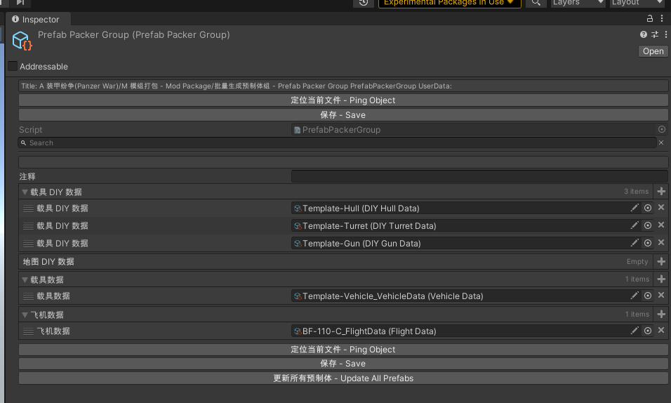
- Added an option to the build flow that automatically repacks tanks, aircraft and DIY vehicles during the build

- Added a lua mono component, so lua methods can be attached to a gameobject and run
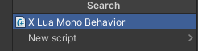
2023.2.6
- Added build support for il runtime dlls

- Added a language switch for the editor tools, so the interface can show Chinese only and stay clearer


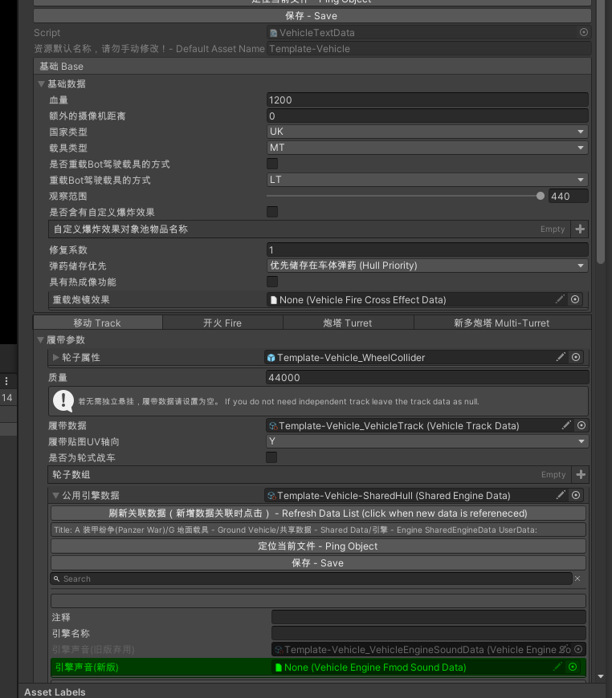
2023.2.2
- Added an option to clear references on Asset Prop Asset Prop

- When packing, the aircraft editor now reports which object has a broken reference
- Added hints to the aircraft editor

2023.1.28
- Common assets have been moved to the shared folder, see the migration document:
- Fixed Mods built with dependencies failing to load those dependencies in the live debugging tool
2023.1.26
- Vehicle thumbnails switched to Streaming
- Added a settings screen to the vehicle debugging tool and updated its assets to the latest
- Packing tanks, aircraft and DIY vehicles now forces R/W on for the HitBox and the module meshes (without it, non-uniform scaling causes a Collision Mesh Data error in game)
- Added an Engine Smoke array to DIY tanks DIY
2023.1.15
- Fixed LODs being lost when a vehicle is edited after it was packed. Vehicle editing speed has also been improved!
- Improved the build speed of vehicles and reduced the size of the built vehicle package
2023.1.11
- Added custom images to the sight, plus a text overlay and text colour
- Removed the old sound null check from the validation that runs when DIY generates a Prefab DIY
2022.1.2
- Fixed some bugs
2022.12.18
- Fixed Pack Assets not working on tank assets
- A Wrapper is now created automatically for the wheels of wheeled vehicles, which prevents rotation errors caused by wrong axes coming from the modelling software
- Added a shortcut for exporting assets as a Unity Package, which makes it easier to report problems to the developers. Details:
27. Send Mod to Devs for Debugging
2022.12.17
- Added the publish channels mod package, Mod.io and the Steam Workshop

- Added the Workshop upload tool package (the package has to be added to the project manually, the same way as middle layer)
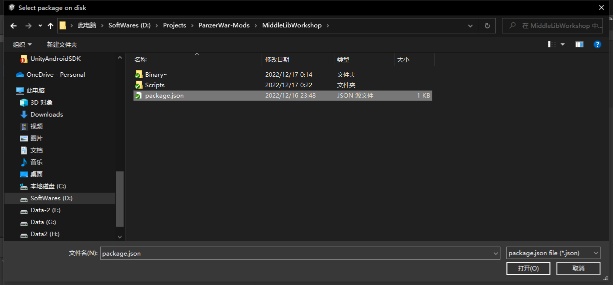
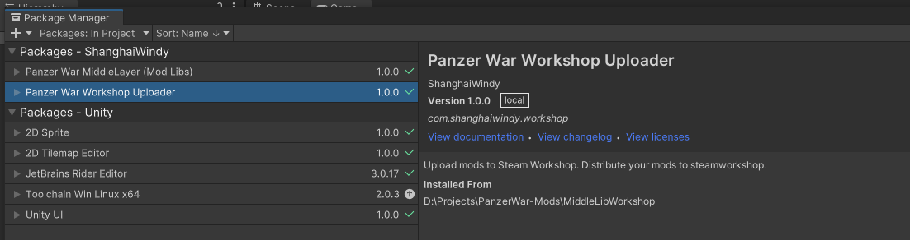
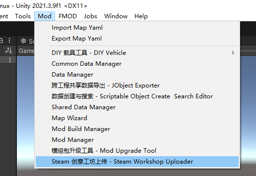
- Improved asset dependencies when the dependency option is checked during a build
2022.12.14
- Added an automated dds to png conversion flow
2022.12.1
- DIY asset references changed to GUID references, with backward compatibility DIY

2022.11.30
- Fmod structure changes Fmod
- Major changes to the project structure, see the upgrade guide:
2022.11.27
- Added Mod support for Fmod
2022.11.22
- Quick creation and search for config data
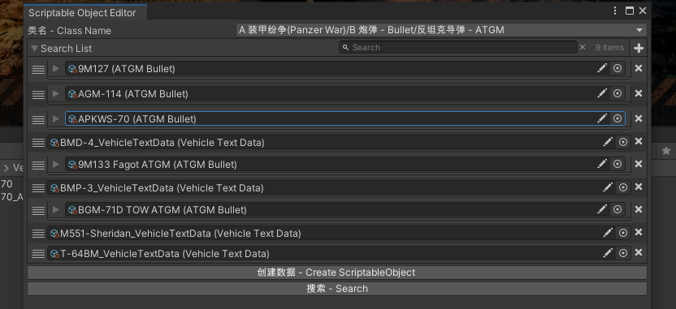
- Preset custom textures: the texture files are extracted into the specified folder
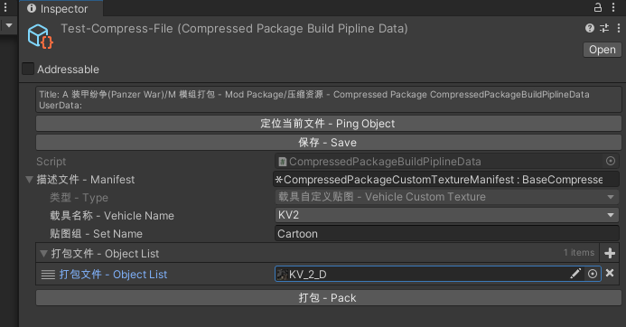
- Preset Fmod audio events; a number of tank sounds are now built in and can be configured on a tank directly.
Located at
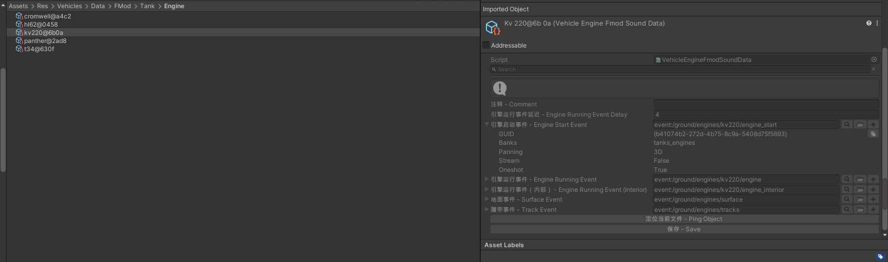
- Added extra engine smoke configuration points to VehicleTextData VehicleTextData
- Added a self-destruct feature, which can be configured in VehicleTextData or through a new self-destruct component
2022.11.6
- Added a visual dependency log for BuildPipline with dependency asset loading enabled. You can search the log to check for redundant assets.

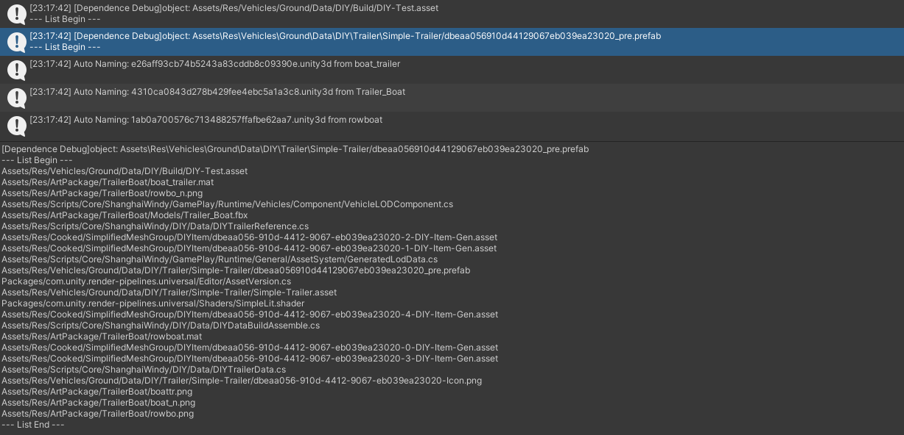
2022.11.1
- Added support for firing groups
- Added support for firing together with the main gun and secondary gun buttons

- Added Dym to the firing config of simple multi-turret setups
2022.10.30
- When DIY vehicle components generate a prefab, the matching LOD is now generated automatically. For prefabs that already exist, click regenerate prefab to make the LOD take effect DIY
- Added a DIY vehicle file picker, used to select DIY vehicles in bulk

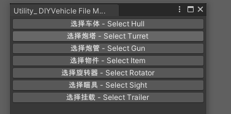
- Selecting several DIY vehicle configs of the same type shows the batch operations
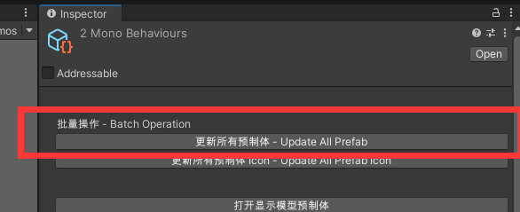
- DIY trailers are now officially included
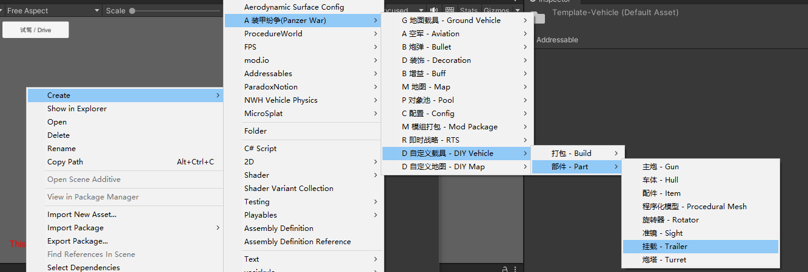
2022.10.25
- Added importing a DIY save as a DIY vehicle config, so that Mod authors can ship a preset vehicle together with their parts Mod.

- Added a preview DIY component for trailers
- Added an SRP material compatibility component, used for model materials inside VFX
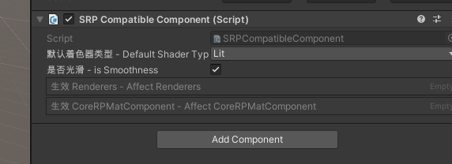
2022.10.22
- Fixed the vehicle name not being written locally in some cases when creating a new vehicle
2022.10.20
- Fixed some windows not expanding
2022.10.19
- Fixed vehicles being unable to export textures
2022.10.18
- Added the FireBall and Laser shell types
- Localised the menu dropdowns

- Localised the VFX dropdowns

- The project has been upgraded to Unity 2021.3.9f1. You have to upgrade to this version to run vehicles in the editor, otherwise they will not load.
2022.9.14
- Fixed editor bugs
2022.9.8
- Added VT shells and ammo belts
2022.8.29
- Added live debugging to the editor
2022.8.21
- Added rotation parameters for Mech @宝马鸽
- Added a tool that fixes Render layer errors
- Added a function to unify the X axis of nodes in the track editor
2022.7.12
- Fixed ammo rack sorting preventing a vehicle from being packed in some cases
2022.5.8
- Fixed DIY vehicle build and upload failures
- Added support for ModPackage build scripts, see the document for details:
- Fixed dependency assets only applying to DIY content
2022.4.30
- The Hash of the mod package is now added to the dependency assets, which prevents asset dependency conflicts between encrypted mod packages
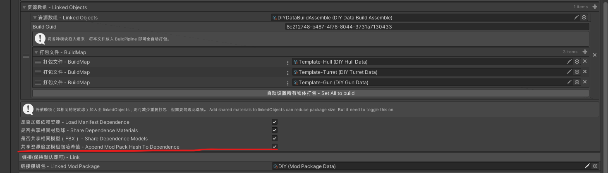
- Fixed Vehicle Info for aircraft and weapons failing to build